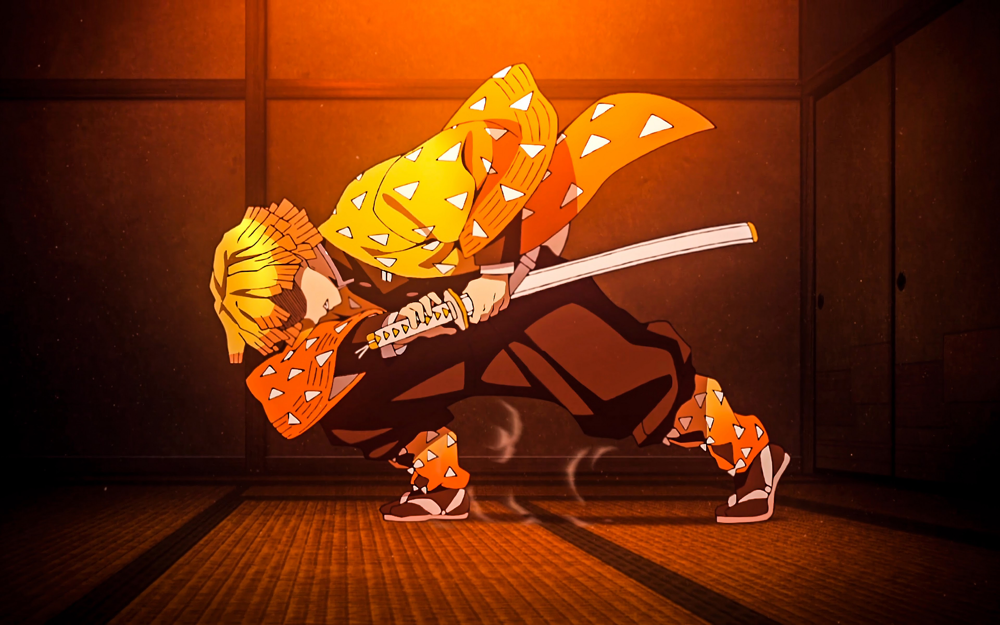

About Zenitsu
Zenitsu Agatsuma is one of the main protagonists of Demon Slayer: Kimetsu no Yaiba and along with Inosuke Hasibira, a travelling companion of Tnajiro Kamado and Nezuko Kamado. He is also a Demon Slayer in the Demon Slayer Corps.
Zenitsu's Thunder Breathing First Form: Thunderclap and Flash
Zenitsu's Characteristics
- He is a young man of average height with fair skin and downward-sloped, scared-looking eyes.
- He has short, yellow hair of varying lengths, cutting off squarely at the ends where if fades to a darker orange color.
- His hair was originally black, but he was struck by lighting during his training and turned his hair to yellow.
Zenitsu and his Nakama
Zenitsu is travelling along with Inosuke Hashibira, Tanjiro Kamado and Nezuko Kamado.